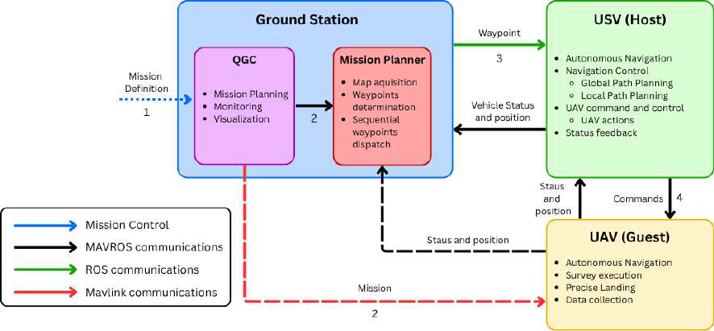
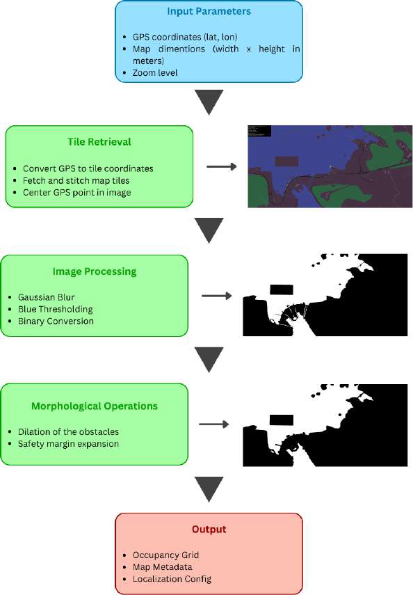
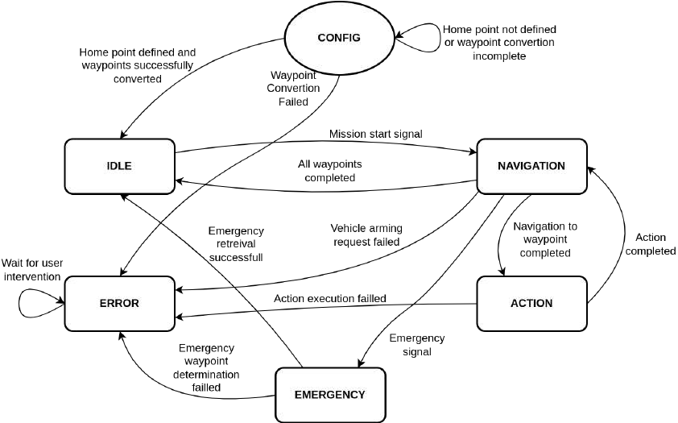
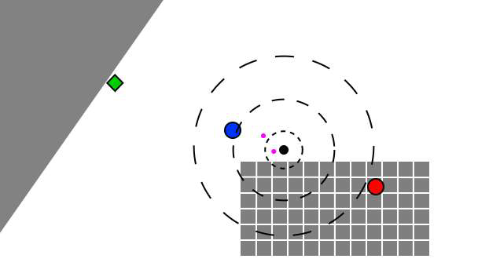
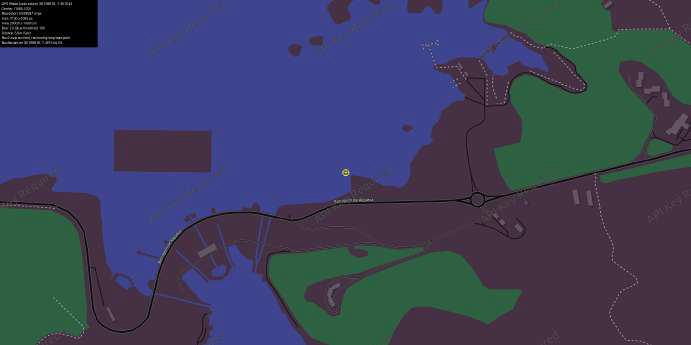
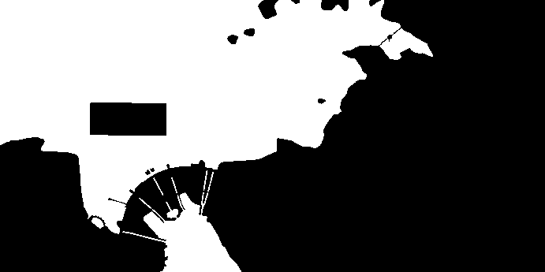
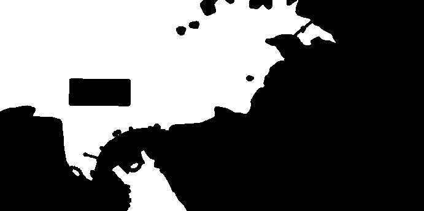
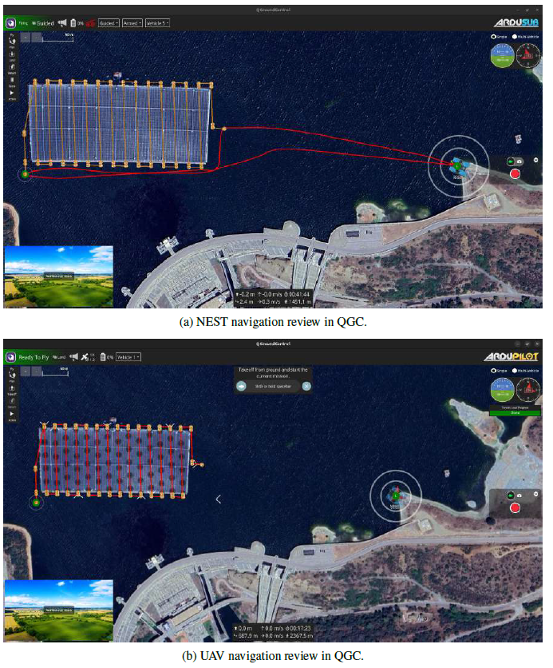
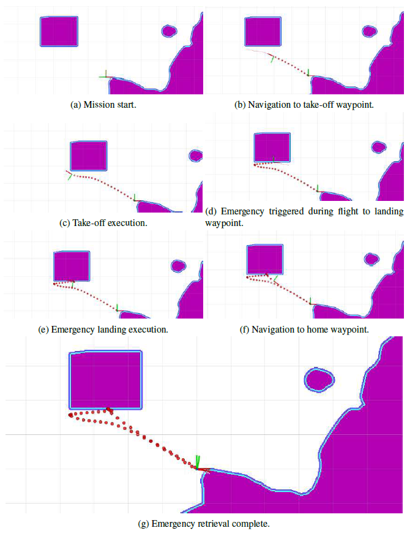
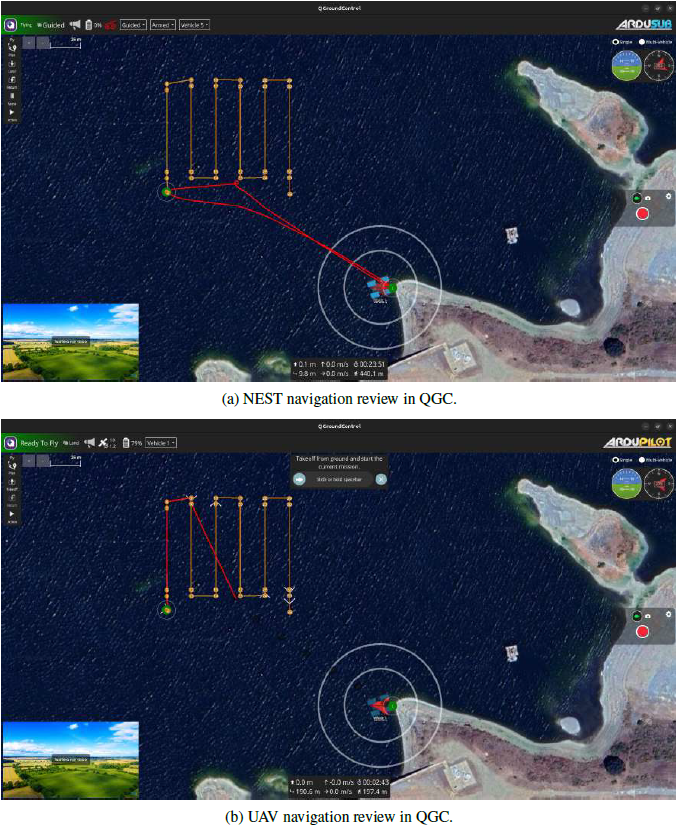

System Architecture
The integration of Unmanned Aerial Vehicles (UAVs) and Unmanned Surface Vehicles (USVs) for autonomous survey missions—specifically the inspection of floating photovoltaic (PV) plants—requires a hybrid architecture. In this framework, the Ground Station acts as a supervisory interface for mission configuration and monitoring. Once deployed, time-critical tasks rely on a decentralized host-guest communication model.
The USV acts as the "host," issuing commands like enabling flight modes or triggering takeoffs, while the UAV acts as the "guest," acknowledging and validating operations. By transporting the drone to the offshore solar site, the USV mitigates the UAV's limited flight endurance. This tight coupling allows the UAV to focus entirely on scanning the solar panels for thermal hot-spots and physical obstructions, while offloading navigation and communication responsibilities to the USV.


Pre-planning and Map Acquisition
Mission configuration begins in QGroundControl (QGC), where the operator defines a survey polygon and flight parameters (altitude, line spacing, etc.). The Mission Planner then parses the generated flight path to identify optimal takeoff and landing coordinates for the USV.
To ensure safe navigation, a custom ROS package automatically generates a 2D occupancy grid of the operational environment. Map tiles are fetched from OpenStreetMap, stitched together, and processed through color thresholding to isolate navigable water.
- Tidal Safety Margins: A dilation operation expands non-navigable regions to account for tidal variations. Assuming a worst-case 40-degree slope for coastal structures, a conservative 5-meter safety buffer is applied to protect the USV from submerged hazards at low tide.
- Dynamic Obstacles: If inspecting a newly introduced structure, the UAV's survey area itself is bounded and injected into the occupancy grid as a navigational obstacle to optimize the USV's global path.

Spatial-Temporal Mission Execution
To coordinate the temporal sequence of events between the two vehicles, the mission is governed by a robust state machine. This ensures tasks occur in the correct order while safely handling contingencies.
- CONFIG & IDLE: The system initializes, retrieves waypoints, converts GPS coordinates to local maps, and waits for a user start signal.
- NAVIGATION: The USV autonomously moves between waypoints, actively monitoring for completion and emergencies.
- ACTION: At each waypoint, the USV executes specific tasks (e.g., Wait, Position Hold, Takeoff, or Landing) before returning to the navigation state.
- ERROR & EMERGENCY: The system gracefully halts on critical faults or triggers safe recovery protocols if an emergency is detected.

Emergency Handling & Rendezvous Optimization
In scenarios such as UAV battery depletion or environmental hazards, the system must rapidly identify a safe rendezvous point for the UAV to land on the USV. This is treated as a multi-criteria optimization problem.
The algorithm minimizes a composite cost function that balances three key factors:
- Coordination Time: Minimizing the maximum travel time for both vehicles to reach the rendezvous point, accounting for their speed differential.
- Return to Home: A penalty factor that favors waypoints closer to the home base to facilitate final mission recovery.
- Safety Buffer: Ensuring the selected waypoint lies within cost-free, navigable water with adequate clearance from obstacles.
To guarantee a solution, the system uses a robust four-stage hierarchical approach: starting with gradient-based optimization, falling back to expanding circular search regions, moving to coarse grid sampling, and ultimately using a deterministic proximity search if previous stages fail.

USV–UAV Cooperative Mission Planning
A cooperative mission planning framework was developed to overcome UAV endurance limitations in offshore operations. The USV acts as an autonomous launch, recovery, and communication platform, enabling extended inspection missions such as floating photovoltaic (PV) farms.
Map Acquisition & Pre-Processing
Mission environments are automatically generated from OpenStreetMap data. A processing pipeline converts raw maps into navigable regions using thresholding and dilation, ensuring safe margins from land and obstacles.



Cooperative Execution
The USV navigates to deployment points, launches the UAV, and repositions for recovery. GPS coordinates are converted into map-frame references for global planning, enabling coordinated navigation and mission execution.
This approach significantly improves efficiency: instead of long transit flights, the UAV focuses almost entirely on inspection tasks, reducing unnecessary travel distance.

USV trajectory during deployment and recovery.

Full mission trajectories of USV and UAV.
Efficiency Gains
The cooperative strategy reduced UAV transit distance from ~1038 m to ~50 m, achieving ~98% inspection efficiency. Total UAV flight time decreased by ~32%, enabling full mission completion within battery constraints.
Emergency Retrieval
A multi-criteria emergency algorithm enables safe recovery during failures. Both vehicles redirect to a dynamically computed rendezvous point, prioritizing the slower USV to minimize UAV loiter time.
In testing, successful recovery was achieved in ~75 seconds, demonstrating robust coordination under failure conditions.

Emergency redirection sequence.

Final trajectories after emergency recovery.
Videos
Full mission execution in simulation
Emergency retrieval sequence in simulation
Real world mission execution (top) and corresponding RViz visualization (bottom) with simulated UAV (simulated through ROS services as shown in the video).